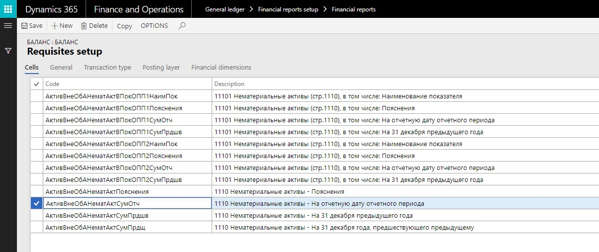
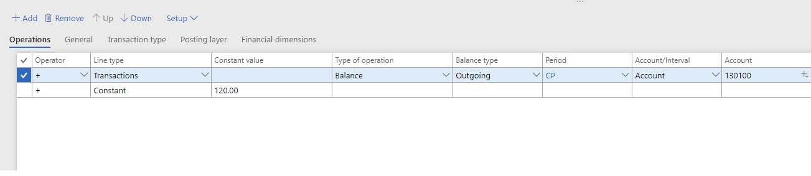
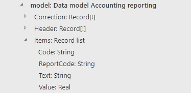
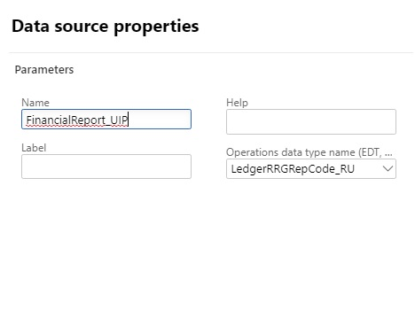
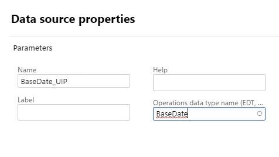
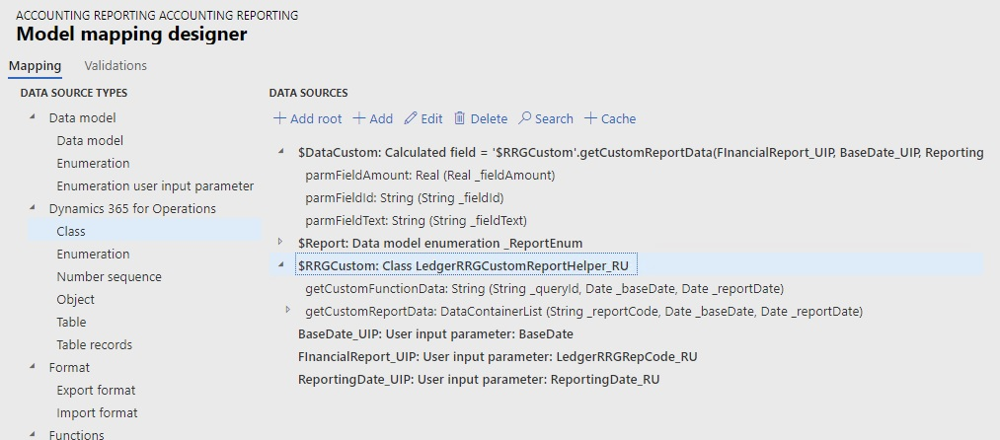
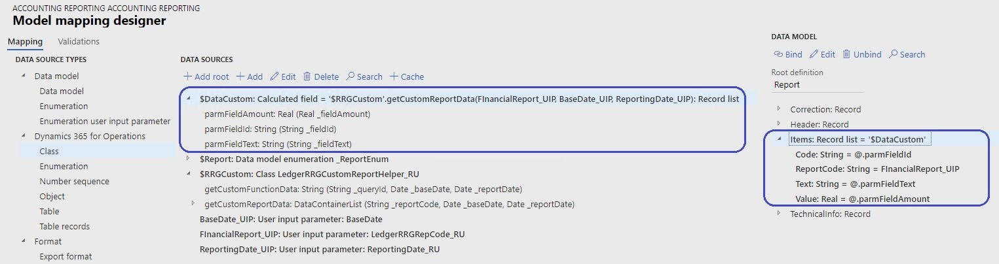
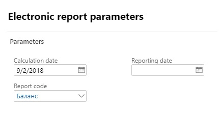
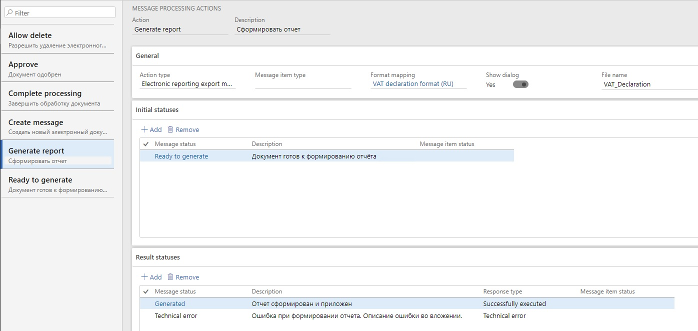
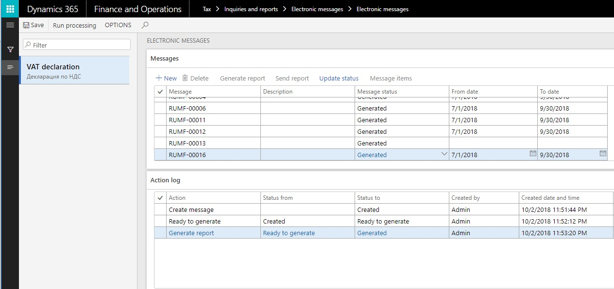

Financial reporting (Russia)
You can configure financial reports, such as the balance sheet or any other report where the reported amounts are presented in cells.
You should define the list of reports and reports cells. For each report cell, you should define the data collection rules, based on ledger transactions, budget transactions, and profit tax registers.
In Electronic reporting (ER), you should configure the report output so that the ER configuration uses the data that is calculated for the configured financial report and generates the file output according to the format configuration (for example, Microsoft Excel or XML).
You should also configure electronic message processing so that one step lets an authorized user run the ER configuration for the financial report, generate the report, and store the report data that is generated.
Set up financial reports
Complete the following tasks to set up the financial reports:
- Set up report names.
- Set up report cells.
- Set up calculation rules for report cells.
Set up report names
Go to General ledger > Financial reports setup > Financial reports to open the Reports page. The Overview tab shows a list of all the reports that are set up in the system.
Create a report, and enter a name and description for it.
Select the General tab, which shows the general parameters for report generation.
In the Currency field, select Base currency if the data on the report should be presented in the company's default currency. If the data should be presented in the reporting currency, select Reporting currency. You can also specify the currency for each cell separately.
In the Period field, select the default period that transactions should be calculated for. Data on the report will be calculated for the selected period, based on the date that is specified when the report is run.
In the Line type field, select the default data source for the report. The following values are available.
Line type Description Transactions The report shows data from posted transactions for ledger accounts. If you select this value, select a value in the Transaction usage field to define how reversing entries should be used for calculations. The available options are All, Only reversing entry, and Without reversing entry. Budget The report shows data from budget entries for ledger accounts. If you select this value, select the default budget model in the Budget model field. Register The report shows data from the calculated profit tax registers. Constant The report shows the values of the defined constants for cells. Contractor The report shows data from the active/passive balances of contractors. Dimension set balance The report shows balances for the selected dimension set. If you select this value, select the default financial dimension set in the Dimension set field. In the Factor field, enter the value that the report data should be divided by.
For example, if the data on the report must be presented in thousands of rubles, enter 1,000. If the data must be presented in full rubles, enter 1.
Select the Transaction type tab, which shows the list of transaction types that will be considered in calculations.
Create a line. In the Transaction type field, select the type of transaction that the report should include. Transactions from the corresponding module will be used to generate the report. Create a line for each type of transaction that you require.
For example, if you select Bank as the transaction type, the report will include transactions that are generated from the Bank management module. If you don't create any lines, the filter won't be used.
Select the Posting layer tab, which shows the list of posting layers that will be considered in calculations. If you don't create any lines, the filter won't be used.
Select the Financial dimensions tab, which shows the dimension filters, if the report must be generated only for specific values of a financial dimension and not for all values.
Create a line. In the Reference field, select the name of the dimension.
In the From and To fields, define the range of dimensions that should be considered in calculations. Create a line for each dimension range that you require. If you don't create any lines, the filter won't be used.
Set up report cells
You can set up the cells of a report either manually or by copying them from another report.
Copy financial reports settings
- On the Reports page, select Copy to open the Copy report settings into a new report dialog box.
- In the Source report section, in the Company field, select the company to copy. In the Report code field, select the report code to copy.
- In the Target report section, in the Report code field, select the report code to copy the settings to, or enter a new report code. If settings are already specified for the target report, they will be overwritten.
Manually create report cells
On the Reports page, select Setup to open the Requisites setup page. The upper pane shows a list of report cells and their main parameters.

In the upper pane, create a line. In the Code field, enter a unique identifier for the report cell.
You can set up any naming convention that you want for identifiers, but the name of every cell on the same report must be unique. The ER configuration that is configured for report output should filter the list of report values by cell codes in the binding between the report values and the format elements.
Tip
For example, you can use a concatenation of XML tag names from the official electronic format of the report.
Enter a description of the line.
The tabs in the upper pane, and the fields on each tab, are the same as the tabs and fields on the Reports page. Values that are entered for a report cell on the Requisites setup page supersede the values that are entered for the report on the Reports page.
Set up calculation rules for report cells
Use the following procedure to create operations for report cells.
On the Reports page, select Setup to open the Requisites setup page.
In the upper pane, select the line for a report cell, or create a line. Then, in the lower pane, select Add to create a line.
For each report cell, you can set up one or more lines that have parameters for calculating amounts. The lines are linked by mathematical operators.

In the Operator field, select the mathematical operator that should be applied to the cell value.
Note
The Operator field specifies the mathematical sign for the amount that is calculated for the cell. The mathematical sign is also used when you set up multiline operations. Typically, vouchers of the Credit balance, Credit activity, and Turnover in correspondence credit types should use a minus sign (-).
In the Line type field, select the data source that is used to calculate the selected line. By default, the value from the cell setup is used. However, you can change the value. The following line types are available.
Line type Data source Available type of operation Transactions Ledger transactions Balance, Credit balance, Debit balance, Turnover, Credit activity, Debit activity, Turnover in correspondence, Turnover in correspondence credit, Turnover in correspondence debit, Active balance (debit), and Passive balance (credit) Budget Budget transactions Balance, Credit balance, Debit balance, Turnover, Credit activity, and Debit activity Register The value that is specified in the Register field field on the Tax registers tab Constant The value that is specified in the Constant value field of Cell operations Contractor Ledger transactions that are related to contractors Active balance (debit) and Passive balance (credit). The balance values are calculated for the analytical level (Document, Agreement, or Contractor) that is specified in the Balance detail field on the General tab. Dimension set balance If you selected Transactions, Budget, or Contractor in the Line type field, select the type of operation in the Type of operation field. The following values are available.
Type of operation Calculation algorithm Balance The transaction amount for the ledger account on the date Credit balance The credit transaction amount for the ledger account on the date Debit balance The debit transaction amount for the ledger account on the date Turnover The transaction amount for the ledger account for the period Credit activity The credit transaction amount for the ledger account for the period Debit activity The debit transaction amount for the ledger account for the period Turnover in correspondence (only for the Transactions line type) The transaction amount for the ledger account in correspondence with other ledger accounts for the period Turnover in correspondence credit (only for the Transactions line type) The credit transaction amount for the ledger account in correspondence with other ledger accounts for the period Turnover in correspondence debit (only for the Transactions line type) The debit transaction amount for the ledger account in correspondence with other ledger accounts for the period Active balance (debit) (only for the Transactions and Contractor line types) The calculation algorithm varies, depending on the line type: - Transactions: First, balances for the ledger account are calculated across all combinations of financial dimensions. Second, debit balances for every dimension combination are summarized. The resulting value is the cell value.
- Contractor: The active balance for the ledger account is calculated by customer, contract, or document.
Passive balance (credit) (only for the Transactions and Contractor line types) The calculation algorithm varies, depending on the line type: - Transactions: First, balances for ledger account are calculated across all combinations of financial dimensions. Second, credit balances for every dimension combination are summarized. The resulting value is the cell value.
- Contractor: The passive balance for the ledger account is calculated by counteragent, contract, or document.
If you selected Balance, Credit balance, Debit balance, Active balance (debit), or Passive balance (credit) in the Type of operation field, select the balance type in the Balance type field: Incoming or Outgoing.
In the Account/Interval field, select Account to set up one general ledger (G/L) account for the operation. To set up a range of G/L accounts, select Interval.
Follow one of these steps, depending on the value that you selected in the Account/Interval field:
- If you selected Account, specify the G/L account in the Account field.
- If you selected Interval, select Setup > Account interval. Create a line, and then, on the Account interval tab, in the From and To fields, select the first and last ledger account numbers that should be used in the calculation.
In the Corr. Account/Interval field, select Account to set up one G/L account for the operation. To set up a range of G/L accounts, select Interval.
Follow one of these steps, depending on the value that you selected in the Corr. Account/Interval field:
- If you selected Account, specify the G/L account in the Corr. account field.
- If you selected Interval, select Setup > Account interval. Create a line, and then, on the Offset interval tab, in the From and To fields, select the first and last ledger account numbers that should be used in the calculation.
If you selected Contractor in the Line type field in step 4, on the General tab, in the Balance detail field, select the analytical level that the active or passive balance for the contractor should be calculated for: Document, Agreement, or Contractor.
If you selected Register in the Line type field, follow these steps:
- On the Tax registers tab, in the Register code field, select the Profit tax register code. Then, in the Register field field, select the name of a register field. The data from the selected register field will be considered in the calculation.
- Optional: In the Account/Interval field, select Account to set up the calculation of the tax register for one expense code. Then, in the Account field, select the expense code. Alternatively, to set up the calculation for a range of expense codes, select Interval. Then select Setup > Account interval, and define the interval of expense codes.
Optional: The General, Posting layer, and Financial dimensions tabs have the same fields as the corresponding tabs in upper pane of the Requisites setup page and the Reports page. On each tab, set values for the operation lines. Values that are entered for an operation supersede the default values that are entered for the cell and/or the report.
After you've finished creating the operation lines, you can arrange them in the correct order. Select a line, and then select the Up or Down button to move it one position up or down.
Configure ER to use the results of financial report calculations
For more information, see Electronic reporting.
The following example shows how to configure ER to use the results of financial report calculations.
Create a new Data model ER configuration for Financial reports (review this page for more details about design of ER data models).
In ER model designer, create root item and name it Model.
Under Root item, create item of data type Record list and name it Items.
Create the following fields under Items:
Field name Data type Description Code String This field gets information from the report cell code. ReportCode String This field gets the code of the financial report. Text String This field gets the value of the report cell if the calculated value is a value of the String type. Value Real This field gets the value of the report cell if the calculated value is a value of the Real type. 
Create a new ER model mapping configuration under the added ER model configuration. For more information, see Define ER model mappings and select data sources for them.
Create Model mapping. In Model mapping designer do the following:
Create the User input parameter for Report code:
In the left pane, on the Mapping tab, under Data source types, select General, and then select the User input parameter line.
In the Data sources pane on the right, select Add root.
In the Name field, enter FinancialReport_UIP as the name of the User input parameter. In the Operations data type name (EDT, enum) field, select the LedgerRRGRepCode_RU extended data type (EDT).

Create the User input parameter for Base date in the same manner. However, enter BaseDate_UIP in the Name field, and select the BaseDate EDT in the Operations data type name (EDT, enum) field.

Create and set up the User input parameter for Reporting date (for example, use the ReportingDate_RU EDT):
Add the LedgerRRGCustomReportHelper_RU class as a data source that is named $RRGCustom.

Create a calculated field that is named $DataCustom, and that has the following expression:
'$RRGCustom'.getCustomReportData(FinancialReport_UIP, BaseDate_UIP, ReportingDate_UIP)
Note
The getCustomReportData function of the LedgerRRGCustomReportHelper_RU class has Financial report name, Base date, and Reporting date as input parameters. It returns a record list of all calculated values for all configured cells of the selected financial report, based on the base date and report date.
The record list that is returned as output contains the following fields on each record line:
- ParmFieldId – The code of the report cell.
- ParmFieldAmount – The value of the calculated cell if it has a data type of Real.
- ParmFieldText – The value of the calculated cell if it has a data type of String.
Bind the data source to model items:
Bind the $DataCustom calculated field to the Items model item.
Bind the record list fields in the following way:
- Items > Code <-> ParmFieldId
- Items > Text <-> ParmFieldText
- Items > Value <-> ParmFieldAmount
- Items > ReportCode <-> FinancialReport_UIP

Set up the format of the report. For more derails on how to add a new format congfiguration, see ER Create a format configuration.
In the format configuration, filter the Items record list by a constant value of Items.Code. Bind the Items.Text or Items.Value fields of the filtered line to the respective format elements.
Run configured format from the Electronic reporting workspace to generate report. Set the following fields:
- Calculation date – Specify the base date to identify the period for the financial report.
- Report code – Select the code for the financial report.
- Reporting date – Optionally specify the date that you're generating the report.

Note
- If you're generating a corrective report for closed periods, and you set the Reporting date field, the calculation of cells on financial reports considers transactions of the base period and all later transactions, up to the reporting date, that correct the base period. (The reporting date in the posted transaction belongs to the base period.)
- If you're generating the report for a recent period, and you set the Reporting date field, the calculation of cells on financial reports considers transactions of the base (recent) period but excludes transactions that correct previous (closed) periods. (The reporting date in the posted transaction belongs to previous closed period.)
Configure electronic messages to generate the financial report and store the results
For more information, see Electronic messaging. The following example shows how to configure electronic messages to run the ER configuration for financial reports.
On the Message statuses page, create message statuses that are applicable to the report (for example, Created and Generated).
On the Message processing action page, create the following actions:
An action that is named Create message, and that has an action type of Create message and a result status of Created.
An action that is named Ready to generate, and that has an action type of Message level user processing and a result status of Ready to generate.
An action that is named Generate report, and that has an action type of Electronic reporting export message, and initial status of Created, and a result status of Generated. For this action, set the following additional values:
- Set the Show dialog option to Yes.
- In the Format mapping field, select the ER format that you created earlier.
- In the File name field, define the default name of the generated file.

On the Electronic message processing page, define the processing flow for the report.
For example, define processing that consists of the three actions that you created earlier: Create message, Ready to generate, and Generate report.
On the Electronic messages page, select the processing that you created in the previous step.
Select New to create a message.
In the From date and To date fields, specify the dates of the reporting period.
Update the status to Ready to generate.

Select Generate report to run the ER format for the financial report.
If you're prompted, enter user parameters in the dialog box.
Review the generated file in Attachments.